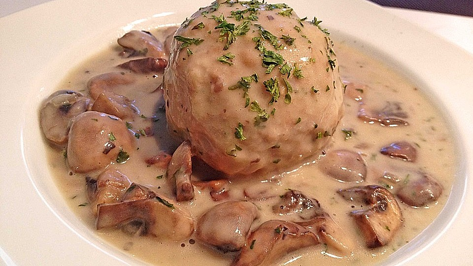

This is a traditional bavarian dish. It's a german dumpling which consists of old bread crumbs and a creamy mushroom sauce.
Follow along for an easy savory recipe.
(This recipe serves 4 people!)
- 10 old white buns
- 250ml milk
- 4 eggs
- 1 onion
- 1 stack of parsley
- salt
- pepper
- 600g mushrooms
- 1 onion
- 3 Tbsp. butter
- 2 Tbsp. parsley
- 2 Tbsp. flour
- 250ml white wine
- 500ml vegetable stock
- 200ml cream
- salt
- pepper
- First cut the buns into stripes and crumble them into bigger bread crumbs. Heat up the milk and pour it over the bread crumbs. Let it rest for 10 min.
- Chop the parsley and onion into fine pieces. Add them and the egg to the bread crumbs.
- Now add salt and pepper to your liking. Mix everything well together with you hands.
- Form 8 balls out of the dough and boil them in salt water for around 20 min.
- For the sauce clean the mushrooms and cut them in halves or quarters. Chop the onion into small pieces.
- Heat up 1Tbsp. of butter in one pan and add the mushrooms as well as the onion. Cook both for around 10 min, then add >salt, pepper and parsley.
- Now take a second pan and heat up the rest of the butter and the flour. Mix constantly until there are no clumps od flour left.
- Add the wine and the vegetable stock and let everything cook for a while. You can add more salt and pepper to your liking at this point.
- In the last step mix the cream and the mushrooms into the sauce.
- Enjoy!